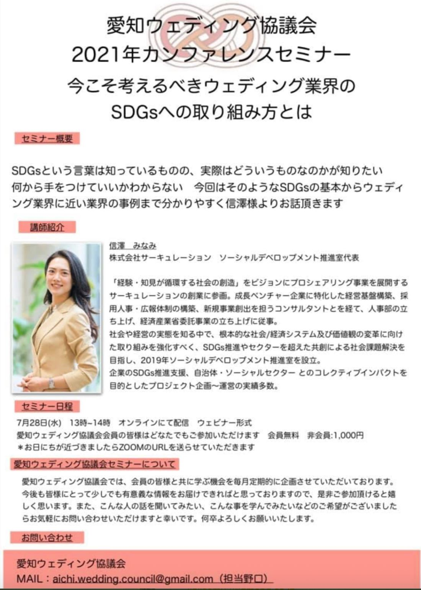

愛知ウェディング協議会は、設立より早いもので、1年6か月経とうとしています。「コロナ禍」と言えば、何かと言い訳になってしまう世の中ですが——それでも、我々の業界にとっては、日々考え、動いていかないと継続の危機に陥る毎日が続いています。
リアルで皆様とお会いすることは、もう少し我慢しなければいけません。それでも何か、皆さまと有意義な時間を過ごせたらと、以下のオンラインイベントを企画致しました。

※ お日にちが近づきましたらZOOMのURLをお送りいたします。
SDGsという言葉は知っているものの、実際はどういうものなのかが知りたい。何から手をつけていいかわからない。今回はそのようなSDGsの基本から、ウェディング業界に近い業界の事例まで、分かりやすく信澤様よりお話いただきます。
いまや、これからの経済活動において、SDGsは確実に必要かつ必須の取り組みです。言葉としては誰もが知るようになりましたが、「では、自社のウェディングの現場で何をすればいいのか」となると、途端に難しくなります。第1部では、この「SDGs」という取り組みを正しく、また実際に運用できるよう、見識を深めていきます。
「経験・知見が循環する社会の創造」をビジョンにプロシェアリング事業を展開するサーキュレーションの創業に参画。成長ベンチャー企業に特化した経営基盤構築、採用人事・広報体制の構築、新規事業創出を担うコンサルタントを経て、人事部の立ち上げ、経済産業省委託事業の立ち上げに従事。社会や経営の実態を知る中で、根本的な社会／経済システム及び価値観の変革に向けた取り組みを強化すべく、SDGs推進やセクターを超えた共創による社会課題解決を目指し、2019年ソーシャルデベロップメント推進室を設立。企業のSDGs推進支援、自治体・ソーシャルセクターとのコレクティブインパクトを目的としたプロジェクト企画〜運営の実績多数。
参加費：会員 無料／非会員 1,000円
6つの部屋（BREAKROOM）に分かれて、分科会を開きます。第2部では、皆さまと今後についての前向きな議論を交わしたいと思っております。少人数の部屋に分かれることで、大人数のセミナーでは言いにくかった本音も、話しやすくなるはずです。ぜひこの機会に、皆さまと意見交換をしたいと考えています。
参加費：会員・非会員ともに 無料
ご参加ご希望の方は、Googleフォームよりお申し込みください。なお、第2部の分科会の詳細についても、Googleフォームにてご確認いただけます。ご希望に添えない場合はご了承ください。詳細は会員の皆さまへメールにてご案内しております。
また、こんな人の話を聞いてみたい、こんな事を学んでみたいなどのご希望がございましたら、お気軽にお問い合わせいただけますと幸いです。
ひとりでも多くの方にお越しいただき、オンラインでお目にかかれますこと、理事一同楽しみにしております。